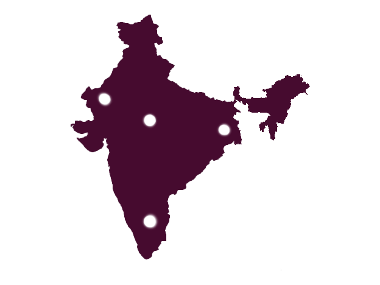

India at a Glance
Let's start with looking at some traditional art from different area's of India. India is home to a diverse array of culture and art, so this is the tip of the iceberg at best. Click on the circles you notice in the image to learn more about an areas traditional art!


Tamil Nadu
These are murals from the Thirunandikkara Cave in Tamil Nadu. They are considered the oldest relics of Kerala's own style of murals. They are meant to represent early examples of Kerala style which heavily resembled Buddhist tradition at the time. Many depict religious and spiritual stories that are passed down through generations. Natural color sources such as vegetables were used to achieve a more colorful effect.

Bengal
Kalighat paintings, a traditional art form, emerged in the 19th century in the vicinity of Kolkata, West Bengal. Rooted in the local culture of West Bengal, Kalighat paintings hold profound cultural significance for the ethnic groups in the region. Initially centered around depictions of gods and goddesses, Kalighat paintings evolved over time to become a vehicle for social commentary and criticism of the prevailing class system. The transformation of these artworks reflects a dynamic shift from religious themes to an exploration of societal issues. Kalighat paintings, with their origins in Kolkata, not only serve as artistic expressions but also offer valuable insights into the cultural and social dynamics of the region.
Madya Pradesh
Mandana paintings represent a distinctive form of tribal art from the Sahariya region in Madhya Pradesh. Executed during significant events or celebrations like weddings, these paintings serve as both aesthetic expressions and cultural markers. Typically applied to walls or floors of homes, Mandana paintings hold a special place in the Sahariya community's artistic practices. Each component of a Mandana painting contributes to a common motif, imbuing the entire artwork with layers of cultural significance. Beyond their aesthetic appeal, this art form represents visual narratives into the Sahariya tribe's cultural identity.
Rajasthan
Pichwai paintings trace their origins back over 400 years to the vibrant state of Rajasthan. The term 'Pichwai' is derived from 'pichh,' meaning back, and 'wai,' referring to a textile hanging. These intricately crafted textiles hold religious significance, primarily portraying the stories of Krishna. Characterized by their cultural richness, Pichwai have become emblematic of Rajasthan's artistic heritage. Beyond their ornamental role, Pichwai paintings serve as visual narrators, capturing the essence of Krishna's tales and contributing to the cultural tapestry of the region. Initially crafted to embellish temple spaces, these paintings gradually transcended their original purpose, finding a place in homes and various cultural settings.